| 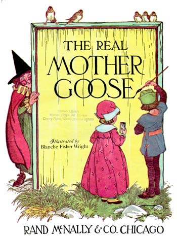 |
THE REAL
|
|
LITTLE BO-PEEP Little Bo-Peep has lost her sheep, And can't tell where to find them; Leave them alone, and they'll come home, And bring their tails behind them. Little Bo-Peep fell fast asleep, And dreamt she heard them bleating; But when she awoke, she found it a joke, For still they all were fleeting. Then up she took her little crook, Determined for to find them; She found them indeed, but it made her heart bleed, For they'd left all their tails behind 'em! It happened one day, as Bo-peep did stray Unto a meadow hard by-- There she espied their tails, side by side, All hung on a tree to dry. She heaved a sigh and wiped her eye, And over the hillocks she raced; And tried what she could, as a shepherdess should, That each tail should be properly placed. |
LITTLE BOY BLUE
Little Boy Blue, come, blow your horn! The sheep's in the meadow, the cow's in the corn. Where's the little boy that looks after the sheep? Under the haystack, fast asleep! |
|
THE CLOCK
There's a neat little clock,-- In the schoolroom it stands,-- And it points to the time With its two little hands. And may we, like the clock, Keep a face clean and bright, With hands ever ready To do what is right. 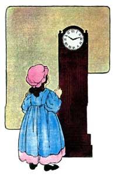 |
WINTER
Cold and raw the north wind doth blow, Bleak in the morning early; All the hills are covered with snow, And winter's now come fairly. 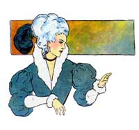 FINGERS AND TOES
Every lady in this land Has twenty nails, upon each hand Five, and twenty on hands and feet: All this is true, without deceit. A SEASONABLE SONG
Piping hot, smoking hot. What I've got You have not. Hot gray pease, hot, hot, hot; Hot gray pease, hot. |
| DAME TROT AND HER CAT
Dame Trot and her cat Led a peaceable life, When they were not troubled With other folks' strife. When Dame had her dinner Pussy would wait, And was sure to receive A nice piece from her plate. THREE CHILDREN ON THE ICE
Three children sliding on the ice Upon a summer's day, As it fell out, they all fell in, The rest they ran away. Oh, had these children been at school, Or sliding on dry ground, Ten thousand pounds to one penny They had not then been drowned. Ye parents who have children dear, And ye, too, who have none, If you would keep them safe abroad Pray keep them safe at home. CROSS PATCH
Cross patch, draw the latch, Sit by the fire and spin; Take a cup and drink it up, Then call your neighbors in. |
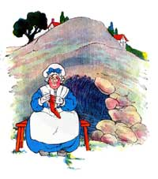 THE OLD WOMAN UNDER A HILL
There was an old woman Lived under a hill; And if she's not gone, She lives there still. TWEEDLE-DUM AND TWEEDLE-DEE
Tweedle-dum and Tweedle-dee Resolved to have a battle, For Tweedle-dum said Tweedle-dee Had spoiled his nice new rattle. Just then flew by a monstrous crow, As big as a tar barrel, Which frightened both the heroes so, They quite forgot their quarrel. |
|
OH, DEAR!
Dear, dear! what can the matter be? Two old women got up in an apple-tree; One came down, and the other stayed till Saturday. 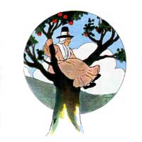 OLD MOTHER GOOSE
Old Mother Goose, when She wanted to wander, Would ride through the air On a very fine gander. LITTLE JUMPING JOAN
Here am I, little jumping Joan, When nobody's with me I'm always alone. ROBIN REDBREAST
Little Robin Redbreast sat upon a tree, Up went Pussy-Cat, down went he, Down came Pussy-Cat, away Robin ran, Says little Robin Redbreast: "Catch me if you can!" Little Robin Redbreast jumped upon a spade, Pussy-Cat jumped after him, and then he was afraid. Little Robin chirped and sang, and what did Pussy say? Pussy-Cat said: "Mew, mew, mew," and Robin flew away. |
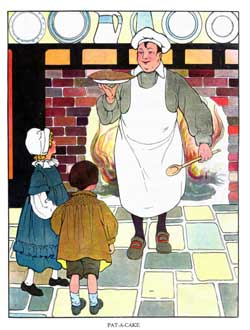 PAT-A-CAKE
Pat-a-cake, pat-a-cake, Baker's man! So I do, master, As fast as I can. Pat it, and prick it, And mark it with T, Put it in the oven For Tommy and me. MONEY AND THE MARE
"Lend me thy mare to ride a mile." "She is lamed, leaping over a stile." "Alack! and I must keep the fair! I'll give thee money for thy mare." "Oh, oh! say you so? Money will make the mare to go!" |
|
A MELANCHOLY SONG
Trip upon trenchers, And dance upon dishes, My mother sent me for some barm, some barm; She bid me go lightly, And come again quickly, For fear the young men should do me some harm. Yet didn't you see, yet didn't you see, What naughty tricks they put upon me? They broke my pitcher And spilt the water, And huffed my mother, And chid her daughter, And kissed my sister instead of me. 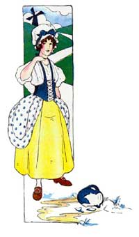 |
GOING TO ST. IVES
As I was going to St. Ives I met a man with seven wives. Every wife had seven sacks, Every sack had seven cats, Every cat had seven kits. Kits, cats, sacks, and wives, How many were going to St. Ives? |
|
THIRTY DAYS HATH SEPTEMBER
Thirty days hath September, April, June, and November; February has twenty-eight alone, All the rest have thirty-one, Excepting leap-year, that's the time When February's days are twenty-nine. 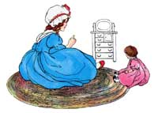 BABY DOLLY
Hush, baby, my dolly, I pray you don't cry, And I'll give you some bread, and some milk by-and-by; Or perhaps you like custard, or, maybe, a tart, Then to either you're welcome, with all my heart. |
BEES
A swarm of bees in May Is worth a load of hay; A swarm of bees in June Is worth a silver spoon; A swarm of bees in July Is not worth a fly. 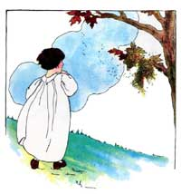 |
|
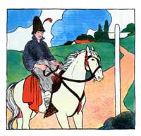 IF WISHES WERE HORSES
If wishes were horses, beggars would ride. If turnips were watches, I would wear one by my side. And if "ifs" and "ands" Were pots and pans, There'd be no work for tinkers! 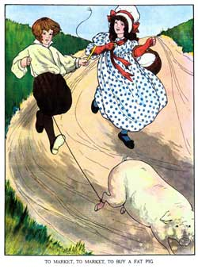 TO MARKET
To market, to market, to buy a fat pig. Home again, home again, jiggety jig. To market, to market, to buy a fat hog, Home again, home again, jiggety jog. To market, to market, to buy a plum bun, Home again, home again, market is done. |
COME OUT TO PLAY
Girls and boys, come out to play, The moon doth shine as bright as day; Leave your supper, and leave your sleep, And come with your playfellows into the street. Come with a whoop, come with a call, Come with a good will or not at all. Up the ladder and down the wall, A half-penny roll will serve us all. You find milk, and I'll find flour, And we'll have a pudding in half an hour. OLD CHAIRS TO MEND
If I'd as much money as I could spend, I never would cry old chairs to mend; Old chairs to mend, old chairs to mend; I never would cry old chairs to mend. If I'd as much money as I could tell, I never would cry old clothes to sell; Old clothes to sell, old clothes to sell; I never would cry old clothes to sell. 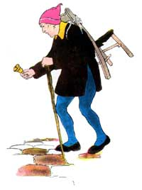 |
|
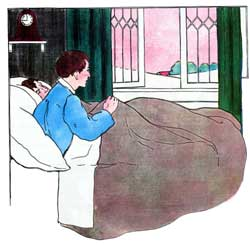 ROBIN AND RICHARD
Robin and Richard were two pretty men, They lay in bed till the clock struck ten; Then up starts Robin and looks at the sky, "Oh, brother Richard, the sun's very high! You go before, with the bottle and bag, And I will come after on little Jack Nag." |
| A MAN AND A MAID
There was a little man, Who wooed a little maid, And he said, "Little maid, will you wed, wed, wed? I have little more to say, So will you, yea or nay, For least said is soonest mended-ded, ded, ded." The little maid replied, "Should I be your little bride, Pray what must we have for to eat, eat, eat? Will the flame that you're so rich in Light a fire in the kitchen? Or the little god of love turn the spit, spit, spit?" HERE GOES MY LORD
Here goes my lord A trot, a trot, a trot, a trot, Here goes my lady A canter, a canter, a canter, a canter! Here goes my young master Jockey-hitch, jockey-hitch, jockey-hitch, jockey-hitch! Here goes my young miss An amble, an amble, an amble, an amble! The footman lags behind to tipple ale and wine, And goes gallop, a gallop, a gallop, to make up his time. |
THE CLEVER HEN
I had a little hen, the prettiest ever seen, She washed me the dishes and kept the house clean; She went to the mill to fetch me some flour, She brought it home in less than an hour; She baked me my bread, she brewed me my ale, She sat by the fire and told many a fine tale. 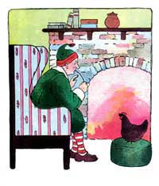 |
|
TWO BIRDS
There were two birds sat on a stone, Fa, la, la, la, lal, de; One flew away, and then there was one, Fa, la, la, la, lal, de; The other bird flew after, And then there was none, Fa, la, la, la, lal, de; And so the stone Was left alone, Fa, la, la, la, lal, de. 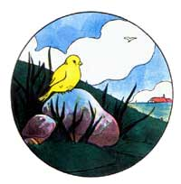 LEG OVER LEG
Leg over leg, As the dog went to Dover; When he came to a stile, Jump, he went over. |
LUCY LOCKET
Lucy Locket lost her pocket, Kitty Fisher found it; Nothing in it, nothing in it, But the binding round it. 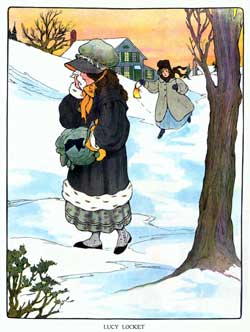 WHEN JENNY WREN WAS YOUNG
'Twas once upon a time, when Jenny Wren was young, So daintily she danced and so prettily she sung, Robin Redbreast lost his heart, for he was a gallant bird. So he doffed his hat to Jenny Wren, requesting to be heard. "Oh, dearest Jenny Wren, if you will but be mine, You shall feed on cherry pie and drink new currant wine, I'll dress you like a goldfinch or any peacock gay, So, dearest Jen, if you'll be mine, let us appoint the day." Jenny blushed behind her fan and thus declared her mind: "Since, dearest Bob, I love you well, I'll take your offer kind. Cherry pie is very nice and so is currant wine, But I must wear my plain brown gown and never go too fine." |
| 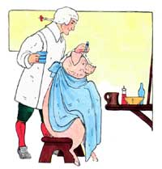 BARBER
Barber, barber, shave a pig. How many hairs will make a wig? Four and twenty; that's enough. Give the barber a pinch of snuff. SOLOMON GRUNDY
Solomon Grundy, Born on a Monday, Christened on Tuesday, Married on Wednesday, Took ill on Thursday, Worse on Friday, Died on Saturday, Buried on Sunday. This is the end Of Solomon Grundy. |
THE FLYING PIG
Dickory, dickory, dare, The pig flew up in the air; The man in brown soon brought him down, Dickory, dickory, dare. 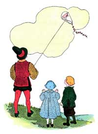 |
| 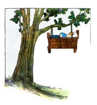 HUSH-A-BYE
Hush-a-bye, baby, on the tree top! When the wind blows the cradle will rock; When the bough breaks the cradle will fall; Down will come baby, bough, cradle and all. BURNIE BEE
Burnie bee, burnie bee, Tell me when your wedding be? If it be to-morrow day, Take your wings and fly away. |
THREE WISE MEN OF GOTHAM
Three wise men of Gotham Went to sea in a bowl; If the bowl had been stronger My song had been longer. 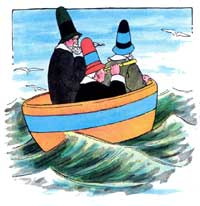 THE HUNTER OF REIGATE
A man went a-hunting at Reigate, And wished to leap over a high gate. Says the owner, "Go round, With your gun and your hound, For you never shall leap over my gate." |
|
LITTLE POLLY FLINDERS
Little Polly Flinders Sat among the cinders Warming her pretty little toes; Her mother came and caught her, Whipped her little daughter For spoiling her nice new clothes. RIDE AWAY, RIDE AWAY
Ride away, ride away, Johnny shall ride, And he shall have pussy-cat Tied to one side; And he shall have little dog Tied to the other, And Johnny shall ride To see his grandmother. 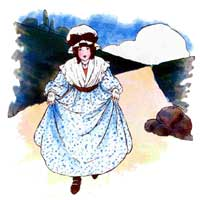 PIPPEN HILL
As I was going up Pippen Hill, Pippen Hill was dirty; There I met a pretty Miss, And she dropped me a curtsy. Little Miss, pretty Miss, Blessings light upon you; If I had half-a-crown a day, I'd spend it all upon you. |
PUSSY-CAT AND QUEEN
"Pussy-cat, pussy-cat, Where have you been?" "I've been to London To look at the Queen." "Pussy-cat, pussy-cat, What did you there?" "I frightened a little mouse Under the chair." 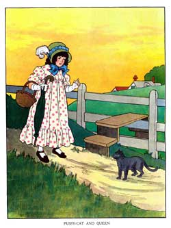 THE WINDS
Mister East gave a feast; Mister North laid the cloth; Mister West did his best; Mister South burnt his mouth Eating cold potato. |
| 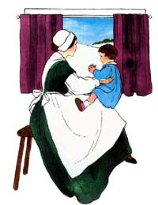 CLAP HANDIES
Clap, clap handies, Mammie's wee, wee ain; Clap, clap handies, Daddie's comin' hame, Hame till his bonny wee bit laddie; Clap, clap handies, My wee, wee ain. |
JUST LIKE ME
"I went up one pair of stairs." "Just like me." "I went up two pairs of stairs." "Just like me." "I went into a room." "Just like me." "I looked out of a window." "Just like me." "And there I saw a monkey." "Just like me." |
|
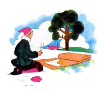 HEIGH-HO, THE CARRION CROW
A carrion crow sat on an oak, Fol de riddle, lol de riddle, hi ding do, Watching a tailor shape his cloak; Sing heigh-ho, the carrion crow, Fol de riddle, lol de riddle, hi ding do! Wife, bring me my old bent bow, Fol de riddle, lol de riddle, hi ding do, That I may shoot yon carrion crow; Sing heigh-ho, the carrion crow, Fol de riddle, loi de riddle, hi ding do! The tailor he shot, and missed his mark, Fol de riddle, lol de riddle, hi ding do! And shot his own sow quite through the heart; Sing heigh-ho, the carrion crow, Fol de riddle, lol de riddle, hi ding do! Wife! bring brandy in a spoon, Fol de riddle, lol de riddle, hi ding do! For our old sow is in a swoon; Sing heigh-ho, the carrion crow, Fol de riddle, lol de riddle, hi ding do! 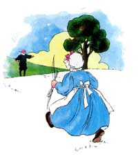 |
PLAY DAYS
How many days has my baby to play? Saturday, Sunday, Monday, Tuesday, Wednesday, Thursday, Friday, Saturday, Sunday, Monday. CHRISTMAS
Christmas comes but once a year, And when it comes it brings good cheer. ELIZABETH
Elizabeth, Elspeth, Betsy, and Bess, They all went together to seek a bird's nest; They found a bird's nest with five eggs in, They all took one, and left four in. |
| A NEEDLE AND THREAD
Old Mother Twitchett had but one eye, And a long tail which she let fly; And every time she went through a gap, A bit of her tail she left in a trap. |
BANBURY CROSS
Ride a cock-horse to Banbury Cross, To see an old lady upon a white horse. Rings on her fingers, and bells on her toes, She shall have music wherever she goes. 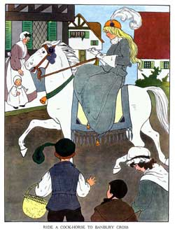 THE MAN IN OUR TOWN
There was a man in our town, And he was wondrous wise, He jumped into a bramble bush, And scratched out both his eyes; But when he saw his eyes were out, With all his might and main, He jumped into another bush, And scratched 'em in again. 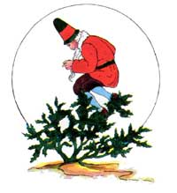 |
| 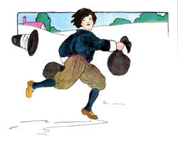 GEORGY PORGY
Georgy Porgy, pudding and pie, Kissed the girls and made them cry. When the boys came out to play, Georgy Porgy ran away. |
FOR EVERY EVIL
For every evil under the sun There is a remedy or there is none. If there be one, seek till you find it; If there be none, never mind it. CUSHY COW
Cushy cow, bonny, let down thy milk, And I will give thee a gown of silk; A gown of silk and a silver tee, If thou wilt let down thy milk to me. |
|
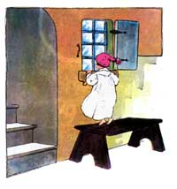 WEE WILLIE WINKIE
Wee Willie Winkie runs through the town, Upstairs and downstairs, in his nightgown; Rapping at the window, crying through the lock, "Are the children in their beds? Now it's eight o'clock." 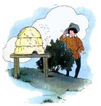 ABOUT THE BUSH
About the bush, Willie, About the beehive, About the bush, Willie, I'll meet thee alive. |
ROBIN-A-BOBBIN
Robin-a-Bobbin Bent his bow, Shot at a pigeon, And killed a crow. JOHN SMITH
Is John Smith within? Yes, that he is. Can he set a shoe? Ay, marry, two. Here a nail, there a nail, Tick, tack, too. |
| SIMPLE SIMON
Simple Simon met a pieman, Going to the fair; Says Simple Simon to the pieman, "Let me taste your ware." Says the pieman to Simple Simon, "Show me first your penny," Says Simple Simon to the pieman, "Indeed, I have not any." Simple Simon went a-fishing For to catch a whale; All the water he could find Was in his mother's pail! Simple Simon went to look If plums grew on a thistle; He pricked his fingers very much, Which made poor Simon whistle. He went to catch a dicky bird, And thought he could not fail, Because he had a little salt, To put upon its tail. He went for water with a sieve, But soon it ran all through; And now poor Simple Simon Bids you all adieu. |
FIVE TOES
This little pig went to market; This little pig stayed at home; This little pig had roast beef; This little pig had none; This little pig said, "Wee, wee! I can't find my way home." 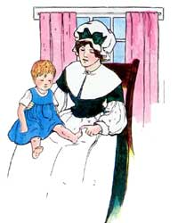 THREE BLIND MICE
Three blind mice! See how they run! They all ran after the farmer's wife, Who cut off their tails with a carving knife. Did you ever see such a thing in your life As three blind mice? 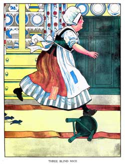 |
|
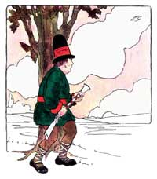 A LITTLE MAN
There was a little man, and he had a little gun, And his bullets were made of lead, lead, lead; He went to the brook, and saw a little duck, And shot it right through the head, head, head. He carried it home to his old wife Joan, And bade her a fire to make, make, make. To roast the little duck he had shot in the brook, And he'd go and fetch the drake, drake, drake. The drake was a-swimming with his curly tail; The little man made it his mark, mark, mark. He let off his gun, but he fired too soon, And the drake flew away with a quack, quack, quack. |
DOCTOR FOSTER
Doctor Foster went to Glo'ster, In a shower of rain; He stepped in a puddle, up to his middle, And never went there again. 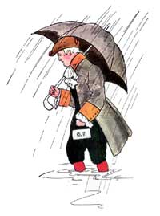 |
| 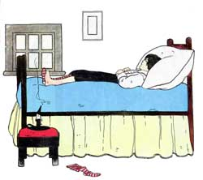 DIDDLE DIDDLE DUMPLING
Diddle diddle dumpling, my son John Went to bed with his breeches on, One stocking off, and one stocking on; Diddle diddle dumpling, my son John. |
JERRY HALL
Jerry Hall, he was so small, A rat could eat him, hat and all. LENGTHENING DAYS
As the days grow longer The storms grow stronger. |
|
THE BLACK HEN
Hickety, pickety, my black hen, She lays eggs for gentlemen; Gentlemen come every day To see what my black hen doth lay. 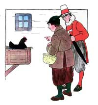 A CANDLE
Little Nanny Etticoat In a white petticoat, And a red nose; The longer she stands The shorter she grows. 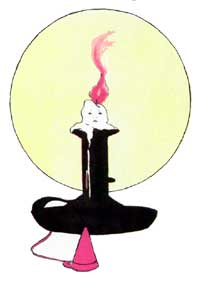 |
THE MIST
A hill full, a hole full, Yet you cannot catch a bowl full. MISS MUFFET
Little Miss Muffet Sat on a tuffet, Eating of curds and whey; There came a big spider, And sat down beside her, And frightened Miss Muffet away. CURLY-LOCKS
Curly-locks, Curly-locks, wilt thou be mine? Thou shalt not wash the dishes, nor yet feed the swine; But sit on a cushion, and sew a fine seam And feed upon strawberries, sugar, and cream. 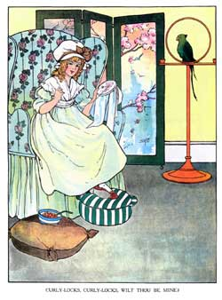 |
|
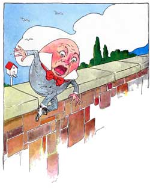 HUMPTY DUMPTY
Humpty Dumpty sat on a wall,Humpty Dumpty had a great fall; All the King's horses, and all the King's men Cannot put Humpty Dumpty together again. |
| ONE, TWO, THREE
One, two, three, four, five, Once I caught a fish alive. Six, seven, eight, nine, ten, But I let it go again. Why did you let it go? Because it bit my finger so. Which finger did it bite? The little one upon the right. THE DOVE AND THE WREN
The dove says coo, coo, what shall I do? I can scarce maintain two. Pooh, pooh! says the wren, I've got ten, And keep them all like gentlemen. MASTER I HAVE
Master I have, and I am his man, Gallop a dreary dun; Master I have, and I am his man, And I'll get a wife as fast as I can; With a heighty gaily gamberally, Higgledy piggledy, niggledy, niggledy, Gallop a dreary dun. |
PINS
See a pin and pick it up, All the day you'll have good luck. See a pin and let it lay, Bad luck you'll have all the day. 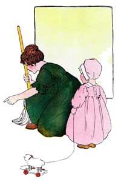 SHALL WE GO A-SHEARING?
"Old woman, old woman, shall we go a-shearing?" "Speak a little louder, sir, I am very thick of hearing." "Old woman, old woman, shall I kiss you dearly?" "Thank you, kind sir, I hear you very clearly." |
| 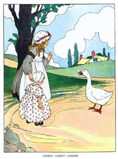 GOOSEY, GOOSEY, GANDER
Goosey, goosey, gander, Whither dost thou wander? Upstairs and downstairs And in my lady's chamber. There I met an old man Who wouldn't say his prayers; I took him by the left leg, And threw him down the stairs. THE COCK AND THE HEN
"Cock, cock, cock, cock, I've laid an egg, Am I to gang ba--are-foot?" "Hen, hen, hen, hen, I've been up and down To every shop in town, And cannot find a shoe To fit your foot, If I'd crow my hea--art out." 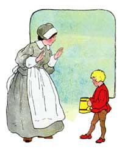 BLUE BELL BOY
I had a little boy, And called him Blue Bell; Gave him a little work,-- He did it very well. I bade him go upstairs To bring me a gold pin; In coal scuttle fell he, Up to his little chin. He went to the garden To pick a little sage; He tumbled on his nose, And fell into a rage. He went to the cellar To draw a little beer; And quickly did return To say there was none there. |
OLD MOTHER HUBBARD
Old Mother Hubbard Went to the cupboard, To give her poor dog a bone; But when she got there The cupboard was bare, And so the poor dog had none. She went to the baker's To buy him some bread; When she came back The dog was dead. She went to the undertaker's To buy him a coffin; When she got back The dog was laughing. She took a clean dish To get him some tripe; When she came back He was smoking a pipe. She went to the alehouse To get him some beer; When she came back The dog sat in a chair. She went to the tavern For white wine and red; When she came back The dog stood on his head. She went to the hatter's To buy him a hat; When she came back He was feeding the cat. She went to the barber's To buy him a wig; When she came back He was dancing a jig. She went to the fruiterer's To buy him some fruit; When she came back He was playing the flute. She went to the tailor's To buy him a coat; When she came back He was riding a goat. She went to the cobbler's To buy him some shoes; When she came back He was reading the news. She went to the sempster's To buy him some linen; When she came back The dog was a-spinning. She went to the hosier's To buy him some hose; When she came back He was dressed in his clothes. The dame made a curtsy, The dog made a bow; The dame said, "Your servant," The dog said, "Bow-wow." |
|
WHY MAY NOT I LOVE JOHNNY?
Johnny shall have a new bonnet, And Johnny shall go to the fair, And Johnny shall have a blue ribbon To tie up his bonny brown hair. And why may not I love Johnny? And why may not Johnny love me? And why may not I love Johnny As well as another body? And here's a leg for a stocking, And here's a foot for a shoe, And he has a kiss for his daddy, And two for his mammy, I trow. And why may not I love Johnny? And why may not Johnny love me? And why may not I love Johnny As well as another body? 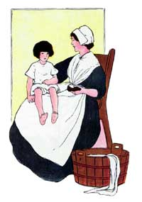 |
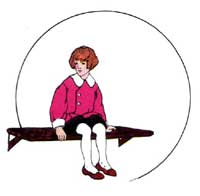 JACK JELF
Little Jack Jelf Was put on the shelf Because he could not spell "pie"; When his aunt, Mrs. Grace, Saw his sorrowful face, She could not help saying, "Oh, fie!" And since Master Jelf Was put on the shelf Because he could not spell "pie," Let him stand there so grim, And no more about him, For I wish him a very good-bye! |
|
JACK SPRAT
Jack Sprat Could eat no fat, His wife could eat no lean; And so, Betwixt them both, They licked the platter clean. 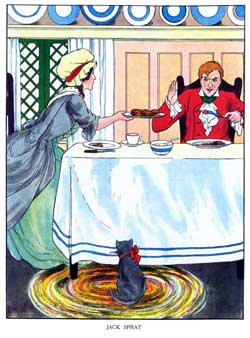 THE GIRL IN THE LANE
The girl in the lane, that couldn't speak plain, Cried, "Gobble, gobble, gobble": The man on the hill that couldn't stand still, Went hobble hobble, hobble. 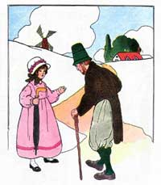 |
DAFFODILS
Daffy-down-dilly has come to town In a yellow petticoat and a green gown. |
| HANDY PANDY
Handy Pandy, Jack-a-dandy, Loves plum cake and sugar candy. He bought some at a grocer's shop, And out he came, hop, hop, hop! |
|
BOBBY SNOOKS
Little Bobby Snooks was fond of his books, And loved by his usher and master; But naughty Jack Spry, he got a black eye, And carries his nose in a plaster. |
| MYSELF
As I walked by myself, And talked to myself, Myself said unto me: "Look to thyself, Take care of thyself, For nobody cares for thee." I answered myself, And said to myself In the selfsame repartee: "Look to thyself, Or not look to thyself, The selfsame thing will be." |
| THE MAN WHO HAD NAUGHT
There was a man and he had naught, And robbers came to rob him; He crept up to the chimney pot, And then they thought they had him. But he got down on t'other side, And then they could not find him; He ran fourteen miles in fifteen days, And never looked behind him. THE TAILORS AND THE SNAIL
Four and Twenty tailors Went to kill a snail; The best man among them Durst not touch her tail; She put out her horns Like a little Kyloe cow. Run, tailors, run, or She'll kill you all e'en now. AROUND THE GREEN GRAVEL
Around the green gravel the grass grows green, And all the pretty maids are plain to be seen; Wash them with milk, and clothe them with silk, And write their names with a pen and ink. |
INTERY, MINTERY
Intery, mintery, cutery corn, Apple seed and apple thorn; Wire, brier, limber-lock, Five geese in a flock, Sit and sing by a spring, O-u-t, and in again. |
|
PUSSY-CAT AND THE DUMPLINGS
Pussy-cat ate the dumplings, the dumplings, Pussy-cat ate the dumplings. Mamma stood by, and cried, "Oh, fie! Why did you eat the dumplings?" |
DANCE, THUMBKIN DANCE
Dance, Thumbkin, dance; (keep the thumb in motion Dance, ye merrymen, everyone. (all the fingers in motion For Thumbkin, he can dance alone, (the thumb alone moving Thumbkin, he can dance alone. (the thumb alone moving Dance, Foreman, dance, (the first finger moving Dance, ye merrymen, everyone. (all moving But Foreman, he can dance alone, (the first finger moving Foreman, he can dance alone. (the first finger moving Dance, Longman, dance, (the second finger moving Dance, ye merrymen, everyone. (all moving For Longman, he can dance alone, (the second finger moving Longman, he can dance alone. (the second finger moving Dance, Ringman, dance, (the third finger moving Dance, ye merrymen, dance. (all moving But Ringman cannot dance alone, (the third finger moving Ringman, he cannot dance alone. (the third finger moving Dance, Littleman, dance, (the fourth finger moving Dance, ye merrymen, dance. (all moving But Littleman, he can dance alone, (the fourth finger moving Littleman, he can dance alone. (the fourth finger moving |
|
BETTY BLUE
Little Betty Blue Lost her holiday shoe; What shall little Betty do? Give her another To match the other And then she'll walk upon two. |
|
PETER PIPER
Peter Piper picked a peck of pickled peppers; A peck of pickled peppers Peter Piper picked. If Peter Piper picked a peck of pickled peppers, Where's the peck of pickled peppers Peter Piper picked? AN EQUAL
Read my riddle, I pray. What God never sees, What the king seldom sees, What we see every day. |
|
JENNY WREN
As little Jenny Wren Was sitting by her shed. She waggled with her tail, And nodded with her head. She waggled with her tail, And nodded with her head, As little Jenny Wren Was sitting by the shed. |